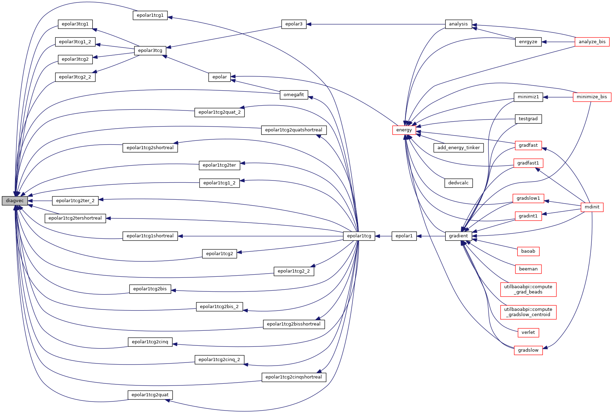
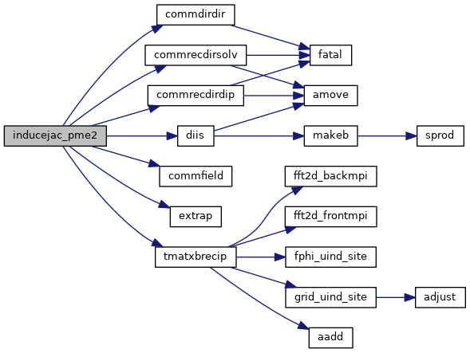
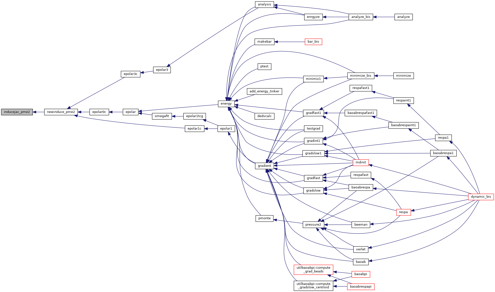
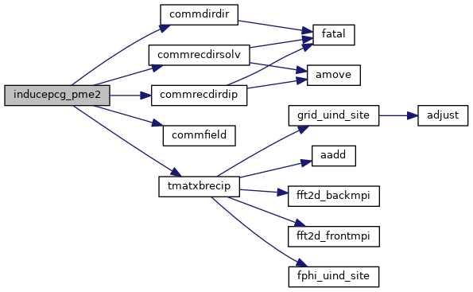
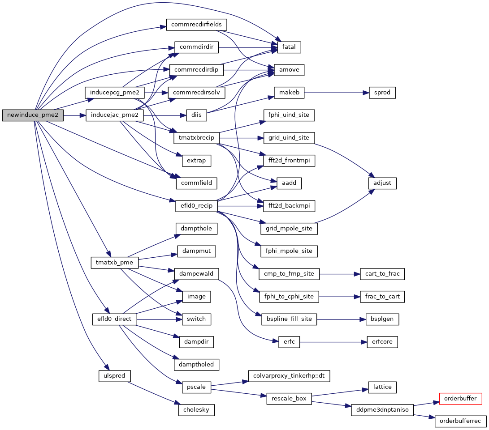
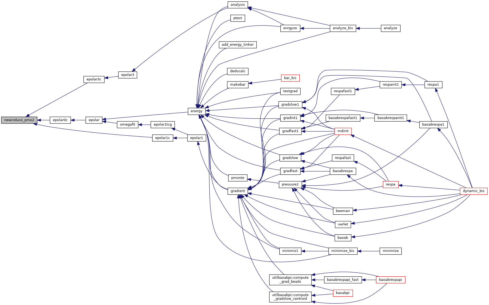
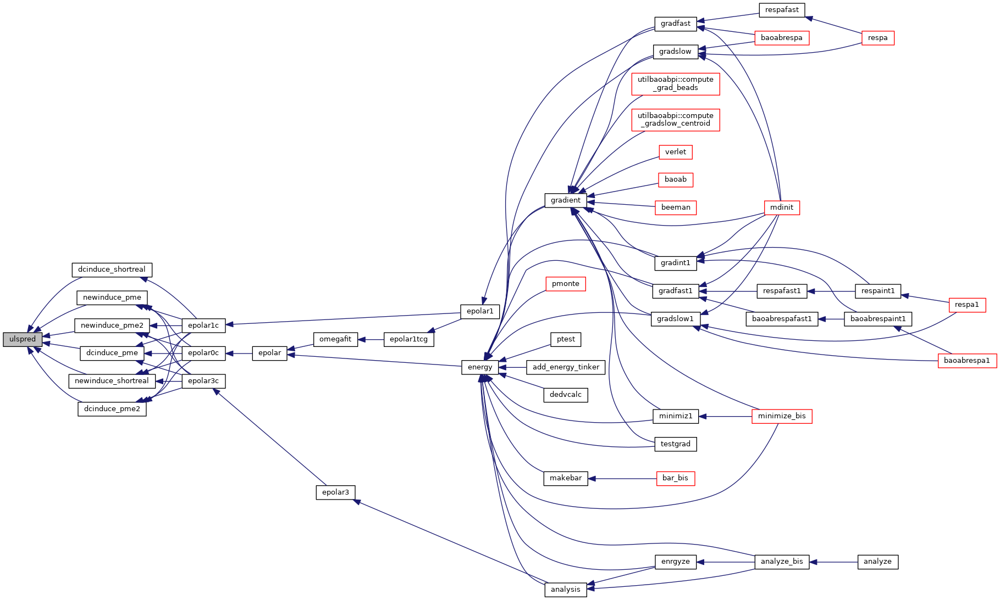

|
Tinker-HP v1.3
|
|
Tinker-HP v1.3
|
Go to the source code of this file.
Functions/Subroutines | |
| subroutine | newinduce_pme2 |
| evaluate induced dipole moments and the polarization energy using either a (preconditioned) conjugate gradient algorithm or Jacobi iterations coupled with DIIS extrapolation. More... | |
| subroutine | inducepcg_pme2 (matvec, nrhs, precnd, ef, mu, murec) |
| Preconditioned Conjugate Gradient Solver for "group" polarization. More... | |
| subroutine | inducejac_pme2 (matvec, nrhs, dodiis, ef, mu, murec) |
| Jacobi/DIIS Solver for polarization. More... | |
| subroutine | ulspred |
| uses standard extrapolation or a least squares fit to set coefficients of an induced dipole predictor polynomial More... | |
| subroutine | diagvec (nrhs, A, B) |
| Performs product of vector a with polarisabilities. More... | |
| subroutine diagvec | ( | integer, intent(in) | nrhs, |
| real*8, dimension(3,nrhs,npolebloc) | A, | ||
| real*8, dimension(3,nrhs,npolebloc) | B | ||
| ) |
Performs product of vector a with polarisabilities.
| [in] | nrhs,: | number of right hand sides |
| [in] | A,: | entry vector |
| [out] | B,: | result vector |
Definition at line 1053 of file newinduce_pme2.f90.
Referenced by epolar1tcg1(), epolar1tcg1_2(), epolar1tcg1shortreal(), epolar1tcg2(), epolar1tcg2_2(), epolar1tcg2bis(), epolar1tcg2bis_2(), epolar1tcg2bisshortreal(), epolar1tcg2cinq(), epolar1tcg2cinq_2(), epolar1tcg2cinqshortreal(), epolar1tcg2quat(), epolar1tcg2quat_2(), epolar1tcg2quatshortreal(), epolar1tcg2shortreal(), epolar1tcg2ter(), epolar1tcg2ter_2(), epolar1tcg2tershortreal(), epolar3tcg1(), epolar3tcg1_2(), epolar3tcg2(), epolar3tcg2_2(), and omegafit().

| subroutine inducejac_pme2 | ( | external | matvec, |
| integer | nrhs, | ||
| logical | dodiis, | ||
| real*8, dimension(3,nrhs,*) | ef, | ||
| real*8, dimension(3,nrhs,*) | mu, | ||
| real*8, dimension(3,nrhs,*) | murec | ||
| ) |
Jacobi/DIIS Solver for polarization.
| [in] | matvec,: | matrix-vector product routine |
| [in] | nrhs,: | number of right hand side |
| [in] | dodiis,: | use of DIIS extrapolation or not |
| [in] | ef,: | permanent electric field (right hand side) |
| [in] | mu,: | induced dipoles (guess at entry) |
Definition at line 665 of file newinduce_pme2.f90.
References commdirdir(), commfield(), commrecdirdip(), commrecdirsolv(), diis(), extrap(), and tmatxbrecip().
Referenced by newinduce_pme2().


| subroutine inducepcg_pme2 | ( | external | matvec, |
| integer | nrhs, | ||
| logical | precnd, | ||
| real*8, dimension(3,nrhs,*) | ef, | ||
| real*8, dimension(3,nrhs,*) | mu, | ||
| real*8, dimension(3,nrhs,*) | murec | ||
| ) |
Preconditioned Conjugate Gradient Solver for "group" polarization.
| [in] | matvec,: | matrix-vector product routine |
| [in] | nrhs,: | number of right hand side |
| [in] | precnd,: | use of diagonal preconditioner or not |
| [in] | ef,: | permanent electric field (right hand side) |
| [in] | mu,: | induced dipoles (guess at entry) |
| [in] | murec,: | induced dipoles (guess at entry) |
Definition at line 305 of file newinduce_pme2.f90.
References commdirdir(), commfield(), commrecdirdip(), commrecdirsolv(), and tmatxbrecip().
Referenced by newinduce_pme2().

| subroutine newinduce_pme2 | ( | ) |
evaluate induced dipole moments and the polarization energy using either a (preconditioned) conjugate gradient algorithm or Jacobi iterations coupled with DIIS extrapolation.
| no | params |
Definition at line 21 of file newinduce_pme2.f90.
References commdirdir(), commfield(), commrecdirdip(), commrecdirfields(), efld0_direct(), efld0_recip(), fatal(), inducejac_pme2(), inducepcg_pme2(), tmatxb_pme(), and ulspred().
Referenced by epolar0c(), epolar1c(), and epolar3c().


| subroutine ulspred | ( | ) |
uses standard extrapolation or a least squares fit to set coefficients of an induced dipole predictor polynomial
| no | params |
Definition at line 941 of file newinduce_pme2.f90.
References cholesky().
Referenced by dcinduce_pme(), dcinduce_pme2(), dcinduce_shortreal(), newinduce_pme(), newinduce_pme2(), and newinduce_shortreal().

 1.8.5
1.8.5